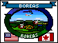

The BOREAS Information System
Terrestrial Ecology (TE)
TE-15: Utilizing Remotely Sensed Data to Model Limnological Carbon Budgets and Primary Production in Boreal Ecosystems
P.I.(s): Robert P. Bukata, John H. Jerome -- National Water Research Institute (NWRI); John R. Miller -- York University
Co-I(s): M.S. Evans -- NHRI; R.A. Armstrong, R.C. Wrigley -- NASA/ARC; E.J. Fee -- FI Winnipeg; Gallie -- Laurentian Univ.
Objectives: Remotely-sensed data will be acquired by the Compact Airborne Spectrographic Imager (CASI) and the Airborne Ocean Color Imager (AOCI) from NASA/Ames Research Center, to determine the co-existing concentrations of aquatic chlorophyll, dissolved organic matter, and suspended inorganic matter. The chlorophyll estimates will be used to model primary production through calculable transfer coefficients, and the dissolved organic matter estimates will be used to model the carbon content of selected lakes within the BOREAS test area. Targetted study sites include Crean and Waskesiu Lakes in the Prince Albert National Park. These two lakes are the only lakes in which direct optical measurements can be complemented with direct biological measurements. Coordination of direct optical measurements, remote sensing overflights, and water sample collection for off-site laboratory analyses, however, is possible for several other Prince Albert lake sites accessible to boat launchings (e.g., Anglin, Halkett, Emma, Christopher, Whiteswan, and Candle Lakes). Whether or not the intensive hydrology test site at Gull Lake can be accessible for the required optical studies is to be determined.
 The inherent optical properties of aquatic chlorophyll, dissolved organic matter, and suspended inorganic matter will be determined by direct sampling and in situ mid-lake measurements using the WATERS instrument. The water samples will be analyzed at laboratory facilities at NWRI, NHRI, and CIMMER.
The inherent optical properties of aquatic chlorophyll, dissolved organic matter, and suspended inorganic matter will be determined by direct sampling and in situ mid-lake measurements using the WATERS instrument. The water samples will be analyzed at laboratory facilities at NWRI, NHRI, and CIMMER.
TE-15 Data Sets
Limnological Carbon Modeling
Get some TE-15 data using FTP (BOREAS Investigators only, password required). [FTP Help]
Click on a team designation to go to that page.
TE Overview || TE-1 | TE-2 | TE-4 | TE-5 | TE-6 | TE-7 | TE-8 | TE-9 | TE-10 | TE-11 | TE-12
TE-13 | TE-14 | TE-15 | TE-16 | TE-17 | TE-18 | TE-19 | TE-20 | TE-21 | TE-22 | TE-23
 Send a data request to the BOREAS Data Manager (BOREAS Investigators only)
Send a data request to the BOREAS Data Manager (BOREAS Investigators only)
E-Mail a comment on this page to the curator 
Send e-mail to Shelaine Curd, the BORIS representative for the TE group
Return to the TE Overview
Return to the BOREAS Science Groups Overview
Return to the BOREAS Home Page
Last Updated: October 29, 1997